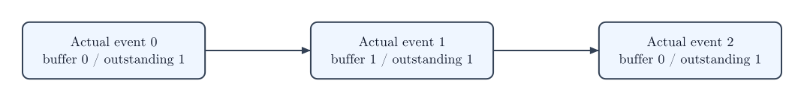
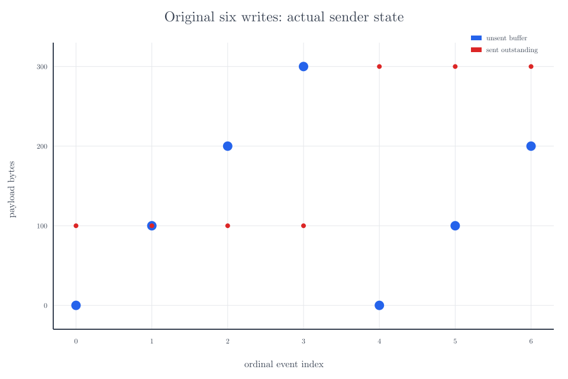
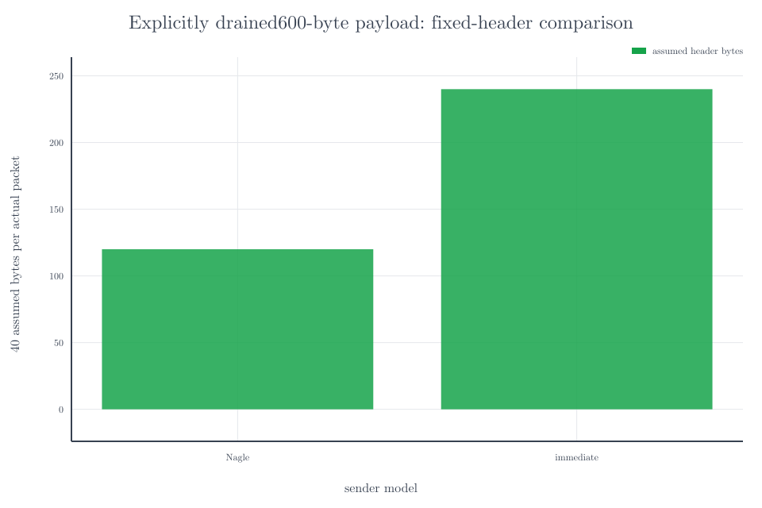
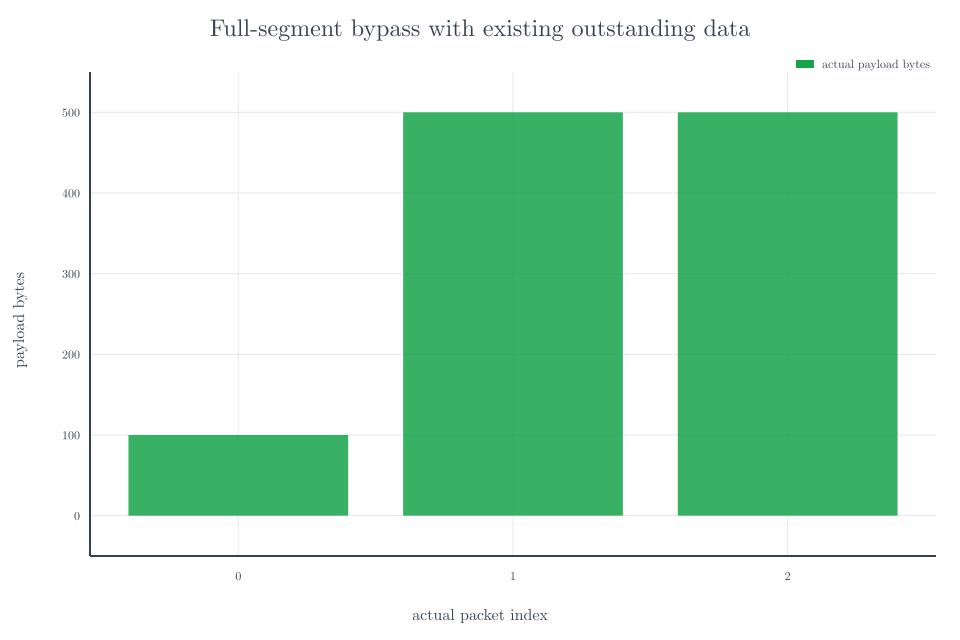

Nagle packet coalescing
Abstract
Coalesce small application writes into fewer transmitted segments when earlier sent bytes remain unacknowledged. This event-driven sender model shows exactly when bytes are buffered or emitted. We inspect a tiny release sequence, retain the original six-write example, account for its unsent tail, and compare header counts only after explicitly draining both simulations. No real TCP connection or latency measurement is involved.
The sender-state rule
Let B be buffered unsent bytes and U outstanding sent bytes. On a write, add bytes to B and emit every available full MSS payload, even if U is nonzero. Emit a remaining partial payload only when U is zero. On an acknowledgment, subtract at most U; if it clears U, emit the held remainder. Every emission decreases B and increases cumulative sent bytes and U by the same amount.
These conservation identities follow by checking each transition. An oversized ACK request is clamped to actual outstanding bytes. The input has ordinal events and no timestamps: it models packetization decisions, not a congestion window, retransmission, delayed-ACK timer, throughput or measured latency. No flush or acknowledgment is implicitly invented at the end.
Two tiny writes and a release
With MSS4, write one byte, write another, then acknowledge one. The first partial packet is sent immediately, the second byte is buffered, and the ACK releases that held byte as a new partial packet. One byte is then outstanding until another ACK arrives. The diagram reads actual post-event states and the table records the exact emitted spans.
#include <dm/dm.hpp>
int main() {
std::filesystem::create_directories("build");
auto t =
dm::algorithms::nagle_trace({{dm::algorithms::NagleEvent::Write, 1},
{dm::algorithms::NagleEvent::Write, 1},
{dm::algorithms::NagleEvent::Ack, 1}}, 4);
dm::graphics::Diagram d;
std::print("| event | buffered before | outstanding before | buffered after | outstanding after | " "actual emitted packets |\n| ---: | ---: | ---: | ---: | ---: | ---: |\n");
for (std::size_t i = 0; i < t.steps.size(); ++i) {
auto &s = t.steps[i];
std::print("| {} | {} | {} | {} | {} | {} |\n", i, s.buffer_before,
s.unacked_before, s.buffer_after, s.unacked_after,
s.packet_count);
auto id = std::to_string(i);
d.node(id, {6.0 * i, 0},
std::format("Actual event {}\nbuffer {} / outstanding {}", i,
s.buffer_after, s.unacked_after));
if (i)
d.edge(std::to_string(i - 1), id);
}
std::print("\nActual payloads: {}.\n", t.result.packets);
d.save_svg("build/nagle_tiny.svg");
}| event | buffered before | outstanding before | buffered after | outstanding after | actual emitted packets |
|---|---|---|---|---|---|
| 0 | 0 | 0 | 0 | 1 | 1 |
| 1 | 0 | 1 | 1 | 1 | 0 |
| 2 | 1 | 1 | 0 | 1 | 1 |
Actual payloads: [1, 1].

Retain the original six writes and expose the tail
The original stream contains six100-byte writes with MSS500 and an ACK100 after the fourth write. Its actual transmitted payloads are100 and300. After all seven events,600 bytes were written,400 sent,200 remain buffered and300 sent bytes remain outstanding. The old packet-count comparison omitted this unsent tail. Fewer emitted packets at that point is not a complete600-byte transmission comparison.
The figure shows actual buffer and outstanding states after every original event. Its horizontal axis is an event index, not elapsed time. The native generator retains the original event order exactly.
#include <dm/dm.hpp>
int main() {
std::filesystem::create_directories("build");
auto t =
dm::algorithms::nagle_trace(dm::algorithms::nagle_demo_events(), 500);
std::vector<double> x, buffer, outstanding;
std::print("| event | type | requested bytes | actual buffer after | actual outstanding after | emitted " "packets |\n| ---: | --- | ---: | ---: | ---: | ---: |\n");
for (std::size_t i = 0; i < t.steps.size(); ++i) {
auto &s = t.steps[i];
x.push_back(i);
buffer.push_back(s.buffer_after);
outstanding.push_back(s.unacked_after);
std::print("| {} | {} | {} | {} | {} | {} |\n", i,
t.events[i].type == dm::algorithms::NagleEvent::Write
? "write" : "ACK", t.events[i].bytes, s.buffer_after,
s.unacked_after, s.packet_count);
}
std::print("\nOriginal packets: {}. Written {}, sent {}, buffered {}, outstanding {}.\n",
t.result.packets, t.result.written, t.result.sent,
t.result.buffered, t.result.unacked);
auto p = dm::graphics::RPlot::create();
p.points(x, buffer, "unsent buffer", {37, 99, 235}, 8).points(
x, outstanding, "sent outstanding", {220, 38, 38}, 4).title(
"Original six writes: actual sender state").x_label(
"ordinal event index").y_label("payload bytes").save_svg(
"build/nagle_original.svg");
}| event | type | requested bytes | actual buffer after | actual outstanding after | emitted packets |
|---|---|---|---|---|---|
| 0 | write | 100 | 0 | 100 | 1 |
| 1 | write | 100 | 100 | 100 | 0 |
| 2 | write | 100 | 200 | 100 | 0 |
| 3 | write | 100 | 300 | 100 | 0 |
| 4 | ACK | 100 | 0 | 300 | 1 |
| 5 | write | 100 | 100 | 300 | 0 |
| 6 | write | 100 | 200 | 300 | 0 |
Original packets: [100, 300]. Written 600, sent 400, buffered 200, outstanding 300.

Compare equal completed payloads with explicit final ACKs
Append ACK300 to release the original200-byte buffer, then ACK200 to acknowledge that final packet. Both Nagle and the immediate-write baseline now send and acknowledge all600 bytes. Nagle emits three packets100,300,200; the baseline emits six100-byte packets. Under the explicitly assumed40 header bytes per packet, the counts are120 and240 header bytes. TCP/IP options and other real protocol details are outside this fixed-header arithmetic.
This illustrates the tradeoff between delaying small writes and reducing packet overhead. Without event times and a real receiver model, it cannot quantify the delay or predict a throughput gain.
#include <dm/dm.hpp>
int main() {
std::filesystem::create_directories("build");
auto events = dm::algorithms::nagle_demo_events(true);
auto with = dm::algorithms::nagle_analyze(events, 500);
auto without = dm::algorithms::nagle_analyze(events, 500, false);
std::print("| sender | actual packets | written | sent | unsent | outstanding | assumed header bytes " "|\n| --- | --- | ---: | ---: | ---: | ---: | ---: |\n| Nagle | {} | {} | {} | {} | {} | {} " "|\n| immediate | {} | {} | {} | {} | {} | {} |\n",
with.packets, with.written, with.sent, with.buffered,
with.unacked, dm::algorithms::nagle_header_bytes(with),
without.packets, without.written, without.sent, without.buffered,
without.unacked, dm::algorithms::nagle_header_bytes(without));
auto p =
dm::graphics::RPlot::barplot({double(dm::algorithms::nagle_header_bytes(
with)),
double(dm::algorithms::nagle_header_bytes(
without))}, {"Nagle", "immediate"},
"assumed header bytes");
p.title("Explicitly drained600-byte payload: fixed-header comparison").x_label("sender model").y_label("40 assumed bytes per actual packet").save_svg("build/nagle_drained.svg");
}| sender | actual packets | written | sent | unsent | outstanding | assumed header bytes |
|---|---|---|---|---|---|---|
| Nagle | [100, 300, 200] | 600 | 600 | 0 | 0 | 120 |
| immediate | [100, 100, 100, 100, 100, 100] | 600 | 600 | 0 | 0 | 240 |

Full packets bypass the partial-write hold
With MSS500, write100 then1000 without an ACK. The first write emits100; the second emits two full500-byte packets despite the existing outstanding data. The actual result is1100 sent bytes, no unsent buffer and1100 outstanding. This is a packetization rule, not permission to ignore a real TCP congestion or receive window.
MSS must be strictly positive. Every event kind and nonnegative byte count is validated before simulation, correcting the legacy zero-MSS infinite loop and negative-byte behavior. Widened cumulative byte counters throw on overflow. Ordinary work is O(events+emitted packets), with constant sender state plus packet output. Optional history owns the input, actual event states and packet causes, with2+2*events+2*packets logical units; default1000000, zero disables. Actual quota failures return no partial result.
#include <dm/dm.hpp>
int main() {
std::filesystem::create_directories("build");
auto t =
dm::algorithms::nagle_trace({{dm::algorithms::NagleEvent::Write, 100},
{dm::algorithms::NagleEvent::Write, 1000}},
500);
std::vector<double> payloads;
std::vector<std::string> labels;
std::print("| actual packet | triggering event | payload bytes | actual reason code |\n| ---: | ---: | " "---: | ---: |\n");
for (std::size_t i = 0; i < t.emissions.size(); ++i) {
auto &e = t.emissions[i];
payloads.push_back(e.bytes);
labels.push_back(std::to_string(i));
std::print("| {} | {} | {} | {} |\n", i, e.event, e.bytes, e.reason);
}
std::print("\nFinal sent {}, buffered {}, outstanding {}. Capture units {}.\n",
t.result.sent, t.result.buffered, t.result.unacked,
t.captured_entries);
auto p =
dm::graphics::RPlot::barplot(payloads, labels, "actual payload bytes");
p.title("Full-segment bypass with existing outstanding data").x_label(
"actual packet index").y_label("payload bytes").save_svg(
"build/nagle_full.svg");
}| actual packet | triggering event | payload bytes | actual reason code |
|---|---|---|---|
| 0 | 0 | 100 | 1 |
| 1 | 1 | 500 | 0 |
| 2 | 1 | 500 | 0 |
Final sent 1100, buffered 0, outstanding 1100. Capture units 12.

Conclusion and references
The state histories explain coalescing and release while conserving every byte. The retained original stream ends with an unsent tail; an explicitly drained variant provides the equal-payload header comparison. Full-segment bypass, complete input guards and the absence of time/window simulation define what these examples can establish.
Nagle, Congestion Control in IP/TCP Internetworks, RFC896 (1984) supplies the small-packet suppression context. The library executes the stated ordinal sender simplification, not a full TCP stack.
Verification
This ten-report batch passes76 CTest cases,22 directly instrumented ASan/UBSan
cases,119 compiled and executed public examples,513/513 scoped documentation
definitions and ten representative clangd hovers. Independent Python Fraction
arithmetic and likelihood/mass reconstruction verify5266 captured records
with43990 checks, including the original Gaussian controls. Frozen valid-input
comparisons cover DFA quotients, byte recoding, event streams, interpolation,
tours, alignments, real-root paths, packing and nested-sampling trajectories.
Ten checkout headers and ten byte-identical installed development headers
compile independently; an installed-header native consumer links and runs. The
batch has42 executed complete programs and42 visually reviewed native figures,
with HTML/Markdown result and image-byte checks. These are scoped native checks,
not an installation claim for every language binding. Receipts:
build/mepml-conversion/batch-244-253/.